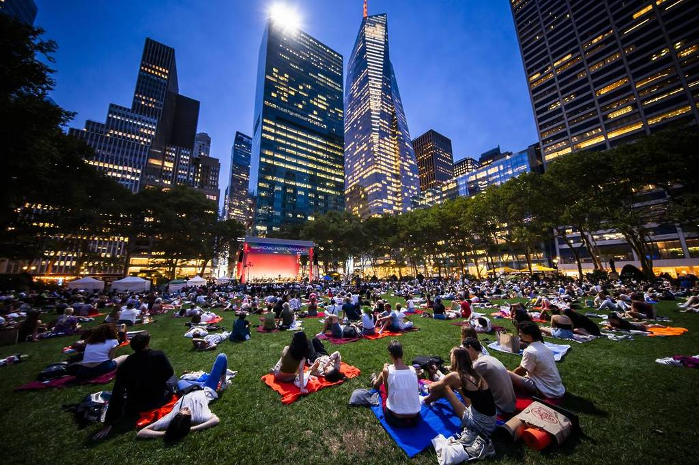
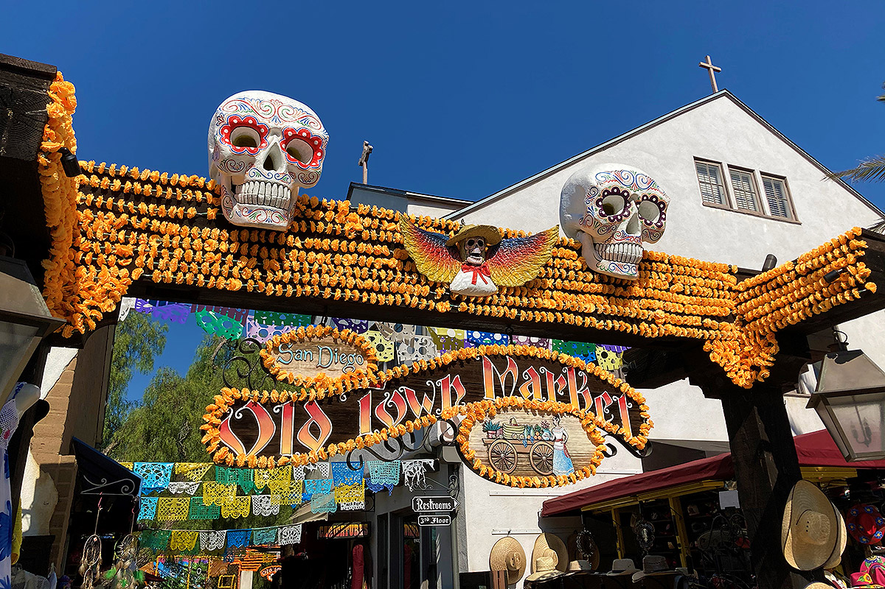

I visited New York a few years ago in end-August, when the Tennis US open is on! The temperature was incredibly high at this time of the year. Central Park was a way to escape the heat for many people in Manhattan. I stayed at a hostel in Midtown, and I loved the vibrant atmosphere of this portion of Manhattan. There are many things I could say about my stay in New York, but I just wanted to share my personal experience about Bryant Park. As a suburban, not used to major cities, I liked to go there in the evening when the day heat went down a little bit, sit on the grass, and listen to free live music shows when they occurred. I hope to visit NY again, but maybe not in August!

I was waiting to go to San Diego for a while after many friends and family had visited or lived in the area and all loved it. I had a great 3-day stay there, enjoying the sun, the beaches (which I found were the most amazing in California), the Seaworld park, the Little Italy district…but my best souvenir was the evenings to walk in the Mexican-styled old town. The craft shops, the Mexican restaurants, the local musicians were all a great experience that I would recommend!
